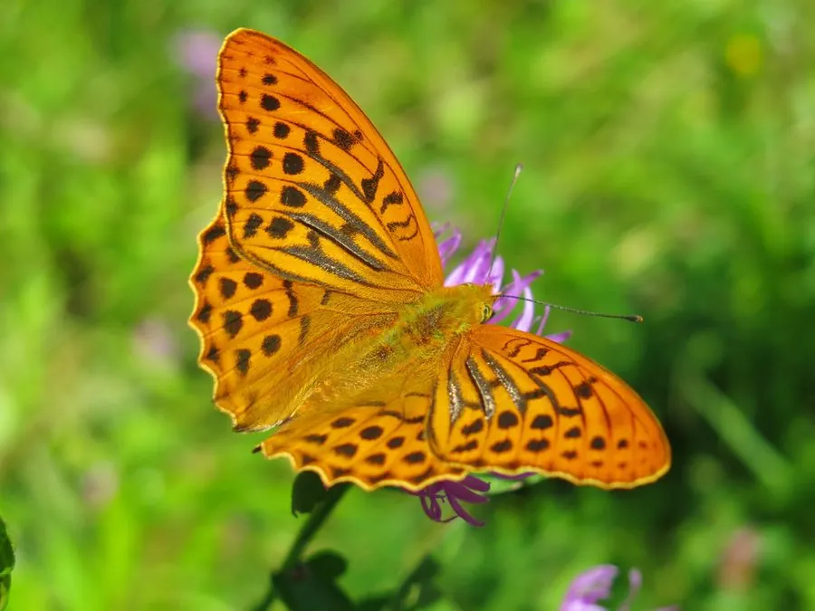

昆虫 · 动物界
绿豹蛱蝶 Argynnis paphia

翅面橙黄带黑色豹纹、雄蝶翅面有银绿色光泽的常见蛱蝶，幼虫取食堇菜，广布欧亚大陆的林地与草甸。
- 分类
- 门节肢动物门纲昆虫纲目鳞翅目科蛱蝶科属豹蛱蝶属
- 栖息环境
- 林地边缘、林间空地、草甸和花园，堇菜生长处
- 地理分布
- 欧洲和亚洲温带地区，包括中国北方
- 保护级别
- 暂无评估
物种志
绿豹蛱蝶翅展约 6–7 cm，雄蝶翅面橙黄色带黑色豹纹，翅面在光线下泛出银绿色或黄绿色的光泽；雌蝶翅色较暗，以橙褐和黑色为主，翅面没有明显光泽。翅腹面有银白色和绿色的斑纹，停歇时容易与地面混在一起。
它生活在林地边缘、林间空地、草甸和花园，成虫飞行迅速，喜欢访花，尤其偏爱蓟类和伞形科花。雌蝶把卵产在堇菜附近的枯枝或树皮上，幼虫孵化后取食堇菜叶片。绿豹蛱蝶广布欧洲和亚洲温带地区，一年发生一代，以幼虫越冬。它是欧洲林地中常见的豹蛱蝶，雄蝶翅面的银绿光泽在阳光下非常漂亮，也是蝴蝶观察中的常见种类。它常在林间空地的花丛间活动。
形态与习性
- 食性幼虫取食堇菜科植物；成虫吸食花蜜
- 翅展约 6–7 cm
- 识别雄蝶翅面橙黄带黑豹纹，泛银绿光泽
- 生活史一年发生一代，以幼虫越冬
- 分布欧洲和亚洲温带地区
趣味知识
- 绿豹蛱蝶雄蝶的翅面在光线下会泛出银绿色的光泽。
- 它的雌蝶没有这种光泽，颜色更暗，容易被当成别的种类。
- 成虫特别喜欢停在蓟花上吸蜜，是欧洲林缘的常见访客。